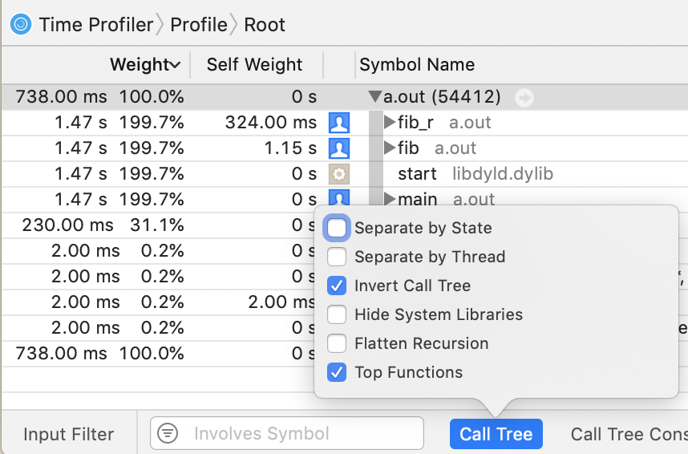
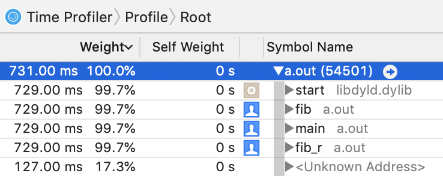

Profiling tool wins and woes.
Profiling tools are awesome. They let us see what actually is affecting our program performance. Profiling tools also are terrible. They lie to us and give us confusing information. They also have some surprisingly new developments: brendangregg’s often cloned flamegraphs tool was created in 2011! So here I will be investigating some ways to make our profile reports better; and looking at ways in which they commonly break, to raise awareness of those artifacts in the reports.
Learn more!
If you want to learn how they are supposed to work, I suggest looking at other resources first, such as:
- Julia Evans on learning to be a wizard: https://wizardzines.com/zines/perf/
- Julia Evans taking a sabbatical to write a profiler tool: https://jvns.ca/categories/ruby-profiler/
- Brendan Gregg on perf: http://www.brendangregg.com/perf.html
- Brendan Gregg on flamegraphs: http://www.brendangregg.com/flamegraphs.html
Then come back here to dive deeper!
Deep Dive into Deeper Stacks
I wanted to look into a couple profilers to see how they would handle recursion. This is a tricky area, both in getting compilers to output useful benchmarks, and in getting profiling tools to summarize the interpretation of it. And since I work on Julia, I can try to fix problems I find there, making the world a better place! For the other tools I tested, I’m hoping this collection of observations may help those projects learn ways to improve from other projects. So if it seems I’m just enjoying finding problems, that’s true, but I also am also actively making fixes and improvements through this effort.
Unit Under Test
We’re going to use recursive Fibonacci as our test function, since it’s dead simple to write in most languages, but we don’t see compilers getting “too clever” and eliminating the recursion. Here’s the basic formulation we’ll use:
fib(n) :
n > 1 => fib(n - 1) + fib(n - 2)
else => 1Furthermore, we’ll also try making each of those recursive calls actually indirect through another function to give a slightly more complex backtrace:
fib_r(n) : fib(n)Profiling C code
First, let’s look at a sample C program:
int fib(int n);
int fib_r(int n) {
return fib(n);
}
int fib(int n) {
return n > 1 ? fib_r(n - 1) + fib_r(n - 2) : 1;
}
int main(void) {
return fib(40);
}On my macOS machine, this takes on the order of one second, so that’s usually a good number of samples. I’m going to use a few options to prevent certain stack optimizations, and otherwise let the compiler do it’s best. The -fno-optimize-sibling-calls option prohibits the compiler from using a tailcall, which ensures fib_r stays in the stacktrace recording and that fib can’t be partially optimized into a loop. The -fno-inline is there to help preserve the predictability of the record.
$ clang -Wall -Werror -pedantic -std=c11 -fno-optimize-sibling-calls -fno-inline -O3 -g fib.c -o fib
$ time ./fib
real 0m0.723s
user 0m0.717s
sys 0m0.003s
$ instruments -t "Time Profiler" ./fib
Instruments Trace Complete: instrumentscli0.trace
$ open instrumentscli0.traceIn Instruments.app, this does quite well, except for one peculiar combination of options.

I don’t know how it computed those numbers, but note that the total runtime was 738 ms, so all those numbers that are some multiple of that (1.47 s, 1.15 s, 230 ms) are wrong.
But in any other mode, we can see that it’s on the right track:

The only problem I can identify here is that all of the self-weights are zero in this view. In the source code view, the lines are properly annotated with counts.
On Linux, with the perf tool, this is pretty similar to use:
$ gcc -Wall -Werror -pedantic -std=c11 -fno-optimize-sibling-calls -fno-inline -O3 -g fib.c
$ perf record --call-graph dwarf ./a.out
[ perf record: Woken up 153 times to write data ]
[ perf record: Captured and wrote 38.221 MB perf.data (4748 samples) ]But I couldn’t get this to generate a satisfactory report. I think the fault is with the dwarf implementation, so it seems you should be careful when using it to make decisions.
$ perf report --stdio --call-graph=none
# Total Lost Samples: 0
#
# Samples: 4K of event 'cycles:uppp'
# Event count (approx.): 3344003009
#
# Children Self Command Shared Object Symbol
# ........ ........ ....... ................ ..................................
#
64.22% 64.22% a.out a.out [.] fib
43.30% 35.77% a.out a.out [.] fib_r
8.75% 0.00% a.out [unknown] [.] 0x00007ffc2454634f
7.52% 0.00% a.out a.out [.] _start
7.52% 0.00% a.out a.out [.] mainI tried various options including -gdwarf-2, -gdwarf-4, -fno-omit-frame-pointer1, and switching to clang. None of those helped much.
With FPO disabled, the clang results were much better than with gcc (both improved), but clang’s output was also a smidgen slower running,
so that might be a contributing factor (more overhead).
But combining the compiler option -fno-omit-frame-pointer with the perf option --call-graph fp worked.
$ perf report --stdio --call-graph=none
# Total Lost Samples: 0
#
# Samples: 4K of event 'cycles:uppp'
# Event count (approx.): 2752040208
#
# Children Self Command Shared Object Symbol
# ........ ........ ....... ................ ..........................
#
99.99% 65.02% a.out a.out [.] fib
99.99% 34.97% a.out a.out [.] fib_r
99.99% 0.00% a.out a.out [.] main
99.99% 0.00% a.out libc-2.27.so [.] __libc_start_main
99.99% 0.00% a.out [unknown] [.] 0x077e258d4c544155Here we see it’s got the right children (total) and self weights!
There’s also a bunch of other options for --call-graph, but all of them spewed vast amounts of (mis)information, so I’ve opted not to try to fit that in here.
Profiling JuliaLang code
Now let’s see how JuliaLang (v1.3) does:
julia> @noinline function fib(n)
return n > 1 ? fib_r(n - 1) + fib_r(n - 2) : 1
end
julia> @noinline fib_r(n) = fib(n)
julia> @time fib(40)
0.738735 seconds (3.16 k allocations: 176.626 KiB)
165580141
julia> using Profile
julia> @profile fib(40)
165580141
julia> Profile.print(format=:flat, sortedby=:count)
Count File Line Function
12 int.jl 52 -
14 int.jl 53 +
212 boot.jl 330 eval
5717 REPL[2] 1 fib_r
6028 REPL[1] 2 fib
julia> count(==(0), Profile.fetch())
585So that’s pretty bad—we appear to have about 212 samples, going by the counts on the eval function at the top of the stack. And we’re told that about 2000% of the time was in fib. Clearly not true. What happened here? We computed that fib (and fib_r) each appeared an average of 10-20 times in every backtrace, so we over-represent them in our flat-format output. OK, so first thing to do is to fix that: each frame should only be counted once towards each output line.
But there’s also the recursive option, which doesn’t suffer from this particular issue. So how does it fare:
julia> Profile.print(format=:tree)
260 REPL[1]:2; fib(::Int64)
112 REPL[1]:1; fib_r(::Int64)
212 task.jl:333; REPL.var"##26#27"
212 REPL.jl:118; macro expansion
212 REPL.jl:86; eval_user_input
212 boot.jl:330; eval
╎ 210 REPL[1]:2; fib
╎ 210 REPL[1]:1; fib_r
╎ 210 REPL[1]:2; fib
╎ 210 REPL[1]:1; fib_r
╎ 210 REPL[1]:2; fib
╎ ╎ 210 REPL[1]:1; fib_r
╎ ╎ 210 REPL[1]:2; fib
╎ ╎ 210 REPL[1]:1; fib_r
╎ ╎ 210 REPL[1]:2; fib
╎ ╎ 210 REPL[1]:1; fib_r
╎ ╎ ╎ 210 REPL[1]:2; fib
╎ ╎ ╎ 210 REPL[1]:1; fib_r
╎ ╎ ╎ 210 REPL[1]:2; fib
╎ ╎ ╎ 210 REPL[1]:1; fib_r
╎ ╎ ╎ 210 REPL[1]:2; fib
╎ ╎ ╎ ╎ 210 REPL[1]:1; fib_r
╎ ╎ ╎ ╎ 210 REPL[1]:2; fib
╎ ╎ ╎ ╎ 210 REPL[1]:1; fib_r
╎ ╎ ╎ ╎ 210 REPL[1]:2; fib
╎ ╎ ╎ ╎ 210 REPL[1]:1; fib_r
╎ ╎ ╎ ╎ ╎ 210 REPL[1]:2; fib
╎ ╎ ╎ ╎ ╎ 210 REPL[1]:1; fib_r
╎ ╎ ╎ ╎ ╎ 210 REPL[1]:2; fib
╎ ╎ ╎ ╎ ╎ 210 REPL[1]:1; fib_r
╎ ╎ ╎ ╎ ╎ 210 REPL[1]:2; fib
╎ ╎ ╎ ╎ ╎ ╎ 210 REPL[1]:1; fib_r
╎ ╎ ╎ ╎ ╎ ╎ 210 REPL[1]:2; fib
╎ ╎ ╎ ╎ ╎ ╎ 210 REPL[1]:1; fib_r
╎ ╎ ╎ ╎ ╎ ╎ 210 REPL[1]:2; fib
╎ ╎ ╎ ╎ ╎ ╎ 210 REPL[1]:1; fib_r
╎ ╎ ╎ ╎ ╎ ╎ ╎ 210 REPL[1]:2; fib
╎ ╎ ╎ ╎ ╎ ╎ ╎ 210 REPL[1]:1; fib_r
╎ ╎ ╎ ╎ ╎ ╎ ╎ 209 REPL[1]:2; fib
╎ ╎ ╎ ╎ ╎ ╎ ╎ 208 REPL[1]:1; fib_r
╎ ╎ ╎ ╎ ╎ ╎ ╎ 208 REPL[1]:2; fib
╎ ╎ ╎ ╎ ╎ ╎ ╎ ╎ 208 REPL[1]:1; fib_r
╎ ╎ ╎ ╎ ╎ ╎ ╎ ╎ 208 REPL[1]:2; fib
╎ ╎ ╎ ╎ ╎ ╎ ╎ ╎ 208 REPL[1]:1; fib_r
╎ ╎ ╎ ╎ ╎ ╎ ╎ ╎ 208 REPL[1]:2; fib
╎ ╎ ╎ ╎ ╎ ╎ ╎ ╎ 206 REPL[1]:1; fib_r
╎ ╎ ╎ ╎ ╎ ╎ ╎ ╎ ╎ 205 REPL[1]:2; fib
╎ ╎ ╎ ╎ ╎ ╎ ╎ ╎ ╎ 203 REPL[1]:1; fib_r
╎ ╎ ╎ ╎ ╎ ╎ ╎ ╎ ╎ 201 REPL[1]:2; fib
╎ ╎ ╎ ╎ ╎ ╎ ╎ ╎ ╎ 199 REPL[1]:1; fib_r
╎ ╎ ╎ ╎ ╎ ╎ ╎ ╎ ╎ 199 REPL[1]:2; fib
╎ ╎ ╎ ╎ ╎ ╎ ╎ ╎ ╎ ╎ 196 REPL[1]:1; fib_r
╎ ╎ ╎ ╎ ╎ ╎ ╎ ╎ ╎ ╎ 194 REPL[1]:2; fib
╎ ╎ ╎ ╎ ╎ ╎ ╎ ╎ ╎ ╎ 190 REPL[1]:1; fib_r
╎ ╎ ╎ ╎ ╎ ╎ ╎ ╎ ╎ ╎ 187 REPL[1]:2; fib
╎ ╎ ╎ ╎ ╎ ╎ ╎ ╎ ╎ ╎ 1 REPL[1]:2; fib
╎ ╎ ╎ ╎ ╎ ╎ ╎ ╎ ╎ ╎ 175 REPL[1]:1; fib_r
╎ ╎ ╎ ╎ ╎ ╎ ╎ ╎ ╎ ╎ ╎ 170 REPL[1]:2; fib
╎ ╎ ╎ ╎ ╎ ╎ ╎ ╎ ╎ ╎ ╎ 4 REPL[1]:2; fib
╎ ╎ ╎ ╎ ╎ ╎ ╎ ╎ ╎ ╎ ╎ 151 REPL[1]:1; fib_r
╎ ╎ ╎ ╎ ╎ ╎ ╎ ╎ ╎ ╎ ╎ 143 REPL[1]:2; fib
╎ ╎ ╎ ╎ ╎ ╎ ╎ ╎ ╎ ╎ ╎ 2 REPL[1]:2; fib
╎ ╎ ╎ ╎ ╎ ╎ ╎ ╎ ╎ ╎ ╎ 120 REPL[1]:1; fib_r
╎ ╎ ╎ ╎ ╎ ╎ ╎ ╎ ╎ ╎ ╎ 109 REPL[1]:2; fib
╎ ╎ ╎ ╎ ╎ ╎ ╎ ╎ ╎ ╎ ╎ ╎ 85 REPL[1]:1; fib_r
╎ ╎ ╎ ╎ ╎ ╎ ╎ ╎ ╎ ╎ ╎ ╎ 76 REPL[1]:2; fib
╎ ╎ ╎ ╎ ╎ ╎ ╎ ╎ ╎ ╎ ╎ ╎ 56 REPL[1]:1; fib_r
╎ ╎ ╎ ╎ ╎ ╎ ╎ ╎ ╎ ╎ ╎ ╎ 48 REPL[1]:2; fib
╎ ╎ ╎ ╎ ╎ ╎ ╎ ╎ ╎ ╎ ╎ ╎ 3 REPL[1]:2; fib
╎ ╎ ╎ ╎ ╎ ╎ ╎ ╎ ╎ ╎ ╎ ╎ 28 REPL[1]:1; fib_r
╎ ╎ ╎ ╎ ╎ ╎ ╎ ╎ ╎ ╎ ╎ ╎ ╎ 26 REPL[1]:2; fib
╎ ╎ ╎ ╎ ╎ ╎ ╎ ╎ ╎ ╎ ╎ ╎ ╎ 10 REPL[1]:1; fib_r
╎ ╎ ╎ ╎ ╎ ╎ ╎ ╎ ╎ ╎ ╎ ╎ ╎ 7 REPL[1]:2; fib
╎ ╎ ╎ ╎ ╎ ╎ ╎ ╎ ╎ ╎ ╎ ╎ ╎ 2 REPL[1]:1; fib_r
╎ ╎ ╎ ╎ ╎ ╎ ╎ ╎ ╎ ╎ ╎ ╎ ╎ 1 int.jl:52; -
╎ ╎ ╎ ╎ ╎ ╎ ╎ ╎ ╎ ╎ ╎ ╎ ╎ 1 int.jl:53; +
╎ ╎ ╎ ╎ ╎ ╎ ╎ ╎ ╎ ╎ ╎ ╎ ╎ 1 int.jl:52; -
╎ ╎ ╎ ╎ ╎ ╎ ╎ ╎ ╎ ╎ ╎ ╎ 1 int.jl:52; -
╎ ╎ ╎ ╎ ╎ ╎ ╎ ╎ ╎ ╎ ╎ ╎ 1 int.jl:53; +
╎ ╎ ╎ ╎ ╎ ╎ ╎ ╎ ╎ ╎ ╎ ╎ 4 int.jl:52; -
╎ ╎ ╎ ╎ ╎ ╎ ╎ ╎ ╎ ╎ ╎ 5 int.jl:53; +
╎ ╎ ╎ ╎ ╎ ╎ ╎ ╎ ╎ ╎ ╎ 2 int.jl:52; -
╎ ╎ ╎ ╎ ╎ ╎ ╎ ╎ ╎ ╎ ╎ 2 int.jl:53; +
╎ ╎ ╎ ╎ ╎ ╎ ╎ ╎ ╎ ╎ ╎ 2 int.jl:52; -
╎ ╎ ╎ ╎ ╎ ╎ ╎ ╎ ╎ ╎ 1 int.jl:53; +
╎ ╎ ╎ ╎ ╎ ╎ ╎ ╎ ╎ ╎ 1 int.jl:52; -
╎ ╎ ╎ ╎ ╎ ╎ ╎ ╎ ╎ ╎ 1 int.jl:53; +
╎ ╎ ╎ ╎ ╎ ╎ ╎ ╎ ╎ 1 int.jl:53; +
╎ ╎ ╎ ╎ ╎ ╎ ╎ ╎ ╎ 2 int.jl:53; +We also see this has issues with identifying the stack in many cases (almost 40% failed!), similar to perf. One way to improve that (reducing to ~10% failure rate) is to disable the omit-frame-pointer option, like we did before. Currently this requires this source code change:
diff --git a/src/jitlayers.cpp b/src/jitlayers.cpp
index cf339d8a4b..f6e9c08e2c 100644
--- a/src/jitlayers.cpp
+++ b/src/jitlayers.cpp
@@ -3,9 +3,7 @@
#include "llvm-version.h"
#include "platform.h"
#include "options.h"
-#if defined(_OS_WINDOWS_) || defined(_OS_FREEBSD_)
# define JL_DISABLE_FPO
-#endif
#include <iostream>
#include <sstream>
But otherwise, this seems fairly accurate, but yikes, what an arrow! I needed over 40 frames this way, and that makes this pretty hard to interpret. Spiky frame-graphs like this can be quite misleading to look at since it’s the sum of the widths that’s important, but the most visually compelling areas (the spikes) are an orthogonal axis. And so this layout can make it really hard to see where the time is being spent in aggregate, especially with recursion causing the height of the important widths to shift vertically.
Julia implements several options, including noisefloor, mincount and maxdepth, to help with many situations, but they do nothing for this example.
The mincount option (also present in Instruments.app for min and max # samples; and in perf as a min percent threshold) drops any line that doesn’t meet that threshold. The maxdepth option (aka print_limit in perf) cuts off the tree after some recursion limit.
The noisefloor option is similar to mincount, but operates as a relative fraction of the noise estimate in the parent frame, instead of a constant threshold (I’m not aware of a similar option in other tools). This can help hide frames from the tree that contribute little to the immediate performance. This is based on the value engineering principle of focusing on the largest contributors first and the statistical measure of sampling noise given as child < noisefloor*sqrt(parent). For many problems, these options can be greatly beneficial to quickly isolate the biggest contributors.
However, none of these option are helpful for our tree above. We need more tools in our toolbox!
Let’s now examine how we can try to consolidate the recursive frames somehow. One option is the flat reports we looked at earlier.
Here’s that same flat report above with the counts corrected (in Julia v1.4-dev), and some extra information also now compiled for it:
julia> Profile.print(format=:flat, sortedby=:counts)
Count Overhead File Line Function
228 2 ./boot.jl 330 eval
2 2 ./int.jl 52 -
25 25 ./int.jl 53 +
321 155 ./REPL[2] 1 fib_r
514 426 ./REPL[1] 2 fib
Total snapshots: 610That’s better, and now the information matches the tree! But unlike the tree view, this flat view doesn’t show context. Some of those functions are very common, like +, and it might not be sufficient to see them in aggregate like this. Can we combine the benefits of both views somehow?
Better recursion handling
Let’s now look at some different approaches some tools take to flatten this recursion to make it easier to find insights.
First, the Instruments.app tool we’ve looked at above has an option to collapse recursive calls, which will take a callstack with one repeated entry and replace it with one entry that takes the sum of that recursion. This has no effect on our example code, since there’s two entries being repeated. While this mode can simplify the stack view and make it easier to explore, it doesn’t provide us with additional insight into the code.
There’s another visualization-only tool called Speedscope which has an option to do this. It imports profile files created by many other tools and languages, so we’ll import the earlier perf file and see how it does against our lineup:

Looks about right! Only one silly nit: it claims the sum of all frames identical to the highlighted frame (just itself) took 367.38 ms (good), but that the highlighted frame alone took 1.05 s (oops, the tool must be computing the count of the wrong summary information). But otherwise, this seems to show about the right information we’ve come to expect.
Let’s look closer at what it’s doing using their stackcollapse recursion sample with left-heavy view and ‘r’ecursion-flattened view shows one solution. Here we see that it simply drops any repeated frames when examining the call tree. This works out fine for our simple fib example, but shows some artifacts when we look at their sample data. Notice how the blue frame © is always charged to the green frame (b), even though half of the calls actually came from the red frame (a)?
When I showed this post to my friend, he suggested I also include his PProf.jl package here (a JuliaLang front end for the pprof visualization tool). This was a good suggestion, as it provides several alternative graphical representations. First, it can produce a callgrind format graphic:

This is nice! We get to visualize the static functions call tree simultaneously with the weight each function contributes to the time. However, this format can be a bit limited on the total quantity of information it can fit, so it might not always help. The pprof tool automatically filters out smaller frames to aid the user in seeing the important ones, and provides several options for adding and removing functions from the view.
In addition, the pprof tool has a sandwich text report that summarizes the caller and callee list around each profile sample:
Type: events
Showing nodes accounting for 632, 100% of 632 total
----------------------------------------------------------+-------------
flat flat% sum% cum cum% calls calls% + context
----------------------------------------------------------+-------------
273 52.20% | fib REPL:-1
273 52.20% | fib_r REPL:1
417 65.98% 65.98% 523 82.75% | fib REPL:2
273 52.20% | fib_r REPL:1
----------------------------------------------------------+-------------
273 72.03% | fib REPL:2
178 28.16% 94.15% 379 59.97% | fib_r REPL:1
273 72.03% | fib REPL:2
33 8.71% | + ./int.jl:2
1 0.26% | - ./int.jl:2
----------------------------------------------------------+-------------
33 100% | + ./int.jl:2 (inline)
33 5.22% 99.37% 33 5.22% | + ./int.jl:53
----------------------------------------------------------+-------------
1 100% | - ./int.jl:2 (inline)
1 0.16% 99.53% 1 0.16% | - ./int.jl:52
----------------------------------------------------------+-------------Let’s combine all those ideas to make a new option for our Julia plain-text tree view: flattened recursion. Here’s the docstring for the new argument to Profile.print:
recur– Controls the recursion handling in:treeformat.:off(default) prints the tree as normal.:flatinstead compresses any recursion (by ip), showing the approximate effect of converting any self-recursion into an iterator.:flatcdoes the same but also includes collapsing of C frames (may do odd things aroundjl_apply).
So this will no longer be a literal interpretation of the stack, but will show a particular linearization where each recursive call was re-written as a loop. This has a few secondary implications.
It means that we may now see counts that sum to greater than their parent. For example, 100% (236⁄236) of the time inside the parent fib was spent inside the child fib_r, and additionally, 4% (9⁄236) were recorded as being part of a direct call to fib from fib (an artifact caused by unreliable stack recording). Additionally, if you recall the definition of fib above, fib has two distinct calls to fib_r. Since the goal was to rearrange recursive calls, and not recursive lines, we expect to see those two calls reflected exactly in the profile shape too. However, there’s no distinction made between which call each was from (unless you also pass collapse=false2).
julia> Profile.print(format=:tree, recur=:flat)
94 ./REPL[1]:1; fib_r(::Int64)
260 ./REPL[2]:2; fib(::Int64)
275 ./task.jl:333; (::REPL.var"##26#27"{REPL.REPLBackend})()
275 ./REPL.jl:118; macro expansion
275 ./REPL.jl:86; eval_user_input(::Any, ::REPL.REPLBackend)
275 ./boot.jl:330; eval(::Module, ::Any)
╎ 273 ./REPL[2]:2; fib(::Int64)
╎ 273 ./REPL[1]:1; fib_r(::Int64)
╎ 273 ./REPL[2]:2; fib(::Int64)
╎ 49 ./REPL[1]:1; fib_r(::Int64)
╎ 1 ./REPL[2]:2; fib(::Int64)
╎ 39 ./int.jl:53; +
╎ 3 ./int.jl:52; -
╎ 1 ./REPL[2]:2; fib(::Int64)
Total snapshots: 629I think this looks cool, and vaguely even shows how I would conceptualize the functions in my head. This is availble right now only on my jn/profile-recurflat branch, but should be a PR soon, and show up in the JuliaLang v1.4 release.
Final thoughts
There’s many more tools for examining profile exploration tools that I haven’t mentioned, including the venerable ProfileView.jl and Juno.jl. And there’s other tools too for working on performance questions, such as the simple @time and the batteries-included BenchmarkTools.jl . Those will often then lead to needing to do deeper exploration of the code. For that next step, consider using Cthulhu.jl and learning more about other kinds of debugging.
And finally, we’re working on a memory profiler for JuliaLang to let you explore questions of memory consumption, similar to the time-duration-consumed questions explored above. So watch for more updates to come!
Post-note: There was also an off-by-one lookup error in Profile.jl too that will soon be resolved. This is almost never an issue, but we can sometimes notice it as bogus information showing some frame that should never have been reached. For example, we can profile a call to the expensive cpuid instruction, and see that there’s a bogus frame that makes it appear we used some code that happened to be located outside the target function was somehow getting used.
julia> testf() = for i = 1:10^7; ccall(:jl_cpuid, Cvoid, (Ref{NTuple{4,Int32}}, Int32), (0,0,0,0), 0); end
julia> @profile testf()
julia> Profile.print(C=true)
201 ./REPL[2]:1; testf()
199 ./REPL[1]:1; cpuid
3 ./processor_x86.cpp:8; jl_cpuid
192 ./processor_x86.cpp:12; jl_cpuid
1 ./libjulia.1.4.dylib:?; _GLOBAL__sub_I_runtime_ccall.cpp- When writing this, I forget to also test the
--fasynchronous-unwind-tablesflag togcc, which is supposed to be exact. However, it seemed not to make a difference toperf. My understanding is that this flag was already the default on x86-64. To confirm this, I tested the inverse flag (-fno-asynchronous-unwind-tables) and noted that this did make the result even worse. [return] The
collapse=falseoption controls whether to merge the profile by line number or to keep them distinct by instruction pointer. One useful code-maintence trick is to try to ensure each line does relatively little, so that line numbers are a precise source of information. This doesn’t need to be taken to the extreme, as I do below as an example (nearly writing out a 3AC manually), since several of these statements will likely get optimized and moved anyways. But sometimes it can be invaluable to see if onefib_rcall was more expensive than the other in our example, or to know which array was being indexed just from the stacktrace, etc.[return]@noinline function fib(n) if n > 1 n -= 1 x1 = fib_r(n) n -= 1 x2 = fib_r(n) y = x1 + x2 else y = 1 end return y end